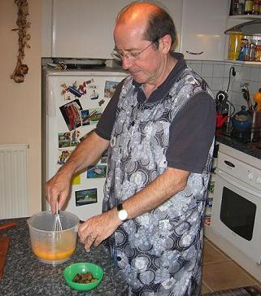
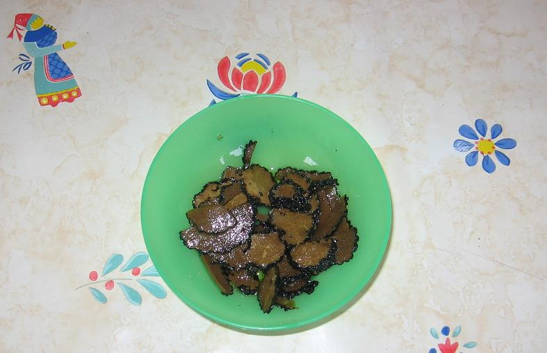
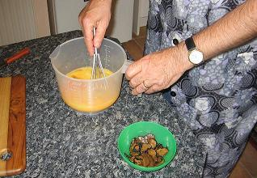
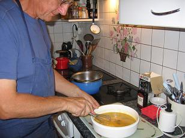
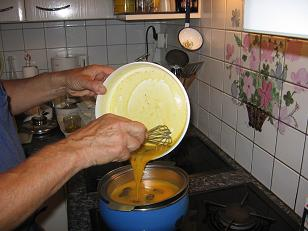
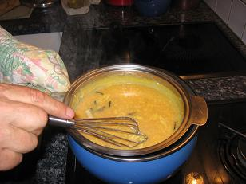

Recette n° 66 :
Brouillade aux truffes offertes par
Jean-Marc et Joëlle des Mées

Pour 4 personnes
Ingrédients :

- 10 œufs,
- 50 g de truffes conservées dans l'huile
- 50 g de l'huile des truffes
- une cuiller à soupe de madère
- 10 cl de crème
fraîche
- poivre et sel, selon goût
Préparation
:

- Casser les œufs
dans une terrine et les battre au fouet en
omelette
- Y ajouter l'huile, du sel, du poivre et battre encore un peu
- Couper les truffes égouttées en lamelles
- Mélanger
les lamelles aux œufs ; réserver au
réfrigérateur pendant au moins 1 h
- Placer la terrine dans une casserole d'eau chaude sur feu moyen, et
battre
au
fouet sans arrêt
- Quand les œufs commencent à
épaissir, arrêter le feu et continuer à remuer
- Retirer la terrine du bain-marie; verser
la crème fraîche et une cuiller à soupe de
madère, en remuant encore tant que la cuisson se poursuit
hors du feu
- Servir
sans attendre.
Observations
:

- recette exécutée par Michel et JP le 3
septembre 2006
à Quiberon, après contact téléphonique avec
Jean-Marc et Joëlle qui nous avaient très gentiment offert
les truffes, pour avoir leurs recommandations ; nous étions
quatre à savourer ce mets (Andrée, Michel, F et moi) ;
c'est vraiment l'une des plus grandes délices de la cuisine
domestique !
- nous avons tout mangé... entre des huîtres farcies
grillées (recette n°67) et une tarte au chocolat et aux
poires (recette n°68)... c'était un dîner où
nous avions oublié de parler de régime... Sans parler
d'un appéritif autour d'un superbe vin blanc hongrois, un Tokaji
de 2003, Hàrslevelü, rapporté par Michel la veille
de Kosice en Slovaquie, et de tapas faites de tronçons de
concombre et de carottes trempés dans un fromage blanc
aïllé, échaloté et cibouletté à
souhait
- le madère n'est pas indispensabe, mais il donne un parfum
agréable
- à la place de l'huile des truffes, on peut mettre du beurre,
mais l'huile des truffes est plus parfumée
- nous avons accompagné ce plat d'un excellent vin , un
Côtes du Marmandais (Château de Beaulieu) 2002

|

|